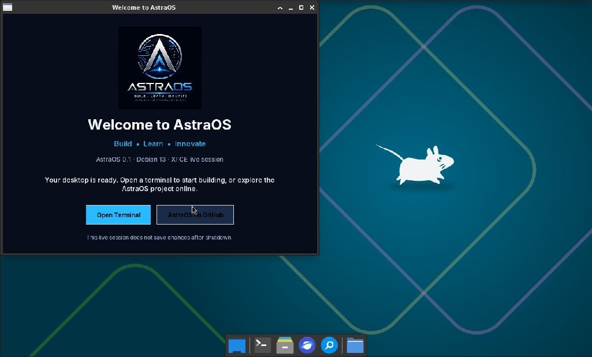

Build the Future with AstraOS
A Debian 13 live desktop today; an ethical security learning toolkit is in development for the next source build.
Explore the Ethical Security Lab guide
About AstraOS
AstraOS 0.1.1 is the BIOS/UEFI boot hotfix for our Debian 13 live Linux system. Both firmware paths reach the AstraOS-branded XFCE desktop in QEMU/KVM, and the terminal launches. Custom AstraOS utilities and physical-PC compatibility testing are next.
See AstraOS running
The first live build boots to an AstraOS-branded XFCE desktop.

Core Features
What you can use in the first live build.
Debian 13 Base
A familiar Linux package foundation with a standard Debian kernel.
XFCE Desktop
A lightweight graphical session that starts from the live image.
BIOS + UEFI Boot
Hybrid ISO with legacy BIOS and UEFI boot entries for amd64 PCs.
Everyday Apps
Firefox ESR, terminal, text editor, networking and disk tools.
Developer Essentials
Git, build tools, Python, curl and common command-line utilities.
AstraOS Branding
Custom boot screen, wallpaper, desktop defaults, logo and welcome app.
Meet Our Team
The passionate people building AstraOS.

Samir Levate
Founder • Team Lead • System ArchitectPassionate Computer Science student building AstraOS to help students learn operating system development.
Samarth Waghmode
Co-FounderCo-Founder of AstraOS, contributing to system architecture, kernel development and project management.
Ashish Papadkar
Developer • Installation & Hardware SupportContributing to AstraOS by improving installation, hardware support, system management and developer workflows.
Join Our Team
Open PositionsWe are looking for passionate developers interested in Operating Systems, C/C++, Assembly, Linux and Open Source.
Apply NowDevelopment Roadmap
v0.1.1 fixes the boot image; BIOS and UEFI reach the AstraOS desktop in QEMU/KVM.
v0.1.1 - Bootable Live Desktop VM Verified
Debian 13, XFCE, BIOS and UEFI desktop startup, terminal and AstraOS branding.
Next - Physical PC Validation
Check graphics, Wi-Fi and storage compatibility on representative physical PCs.
v0.2 - AstraOS Utilities
Add an AstraOS settings panel, welcome flow and graphical software installation.
Developer & Security Toolkit
Curate more development and security tools with documentation and safe defaults.
Long-Term OS Research
Explore custom kernel, filesystem and desktop components as separate future projects.
Project Statistics
Current progress of AstraOS.
v0.1.1
BIOS + UEFI VM Verified
amd64
64-bit Target
2
Boot Modes
Debian 13
Linux Base
🍴 Forks: 0
👀 Watchers: 0
🐞 Issues: 0
👥 Contributors: 0
🚀 Latest Version: Loading...
Why AstraOS?
Designed for learning, collaboration and innovation.
Educational
Explore the live-build recipe, branding, desktop defaults and welcome utility.
Open Source
Anyone can contribute and improve AstraOS.
Community Driven
Developed by passionate students and developers.
Hands-on Learning
Start with a working desktop and a practical set of development tools.
Contact Us
Join the AstraOS community and contribute to the future of open-source operating systems.
Get In Touch
Whether you're a student, developer, or open-source enthusiast, we'd love to hear from you.